一場文字裡的荒島求生
十章劇情的文字冒險生存遊戲。每一個選擇，都寫進你的日誌。
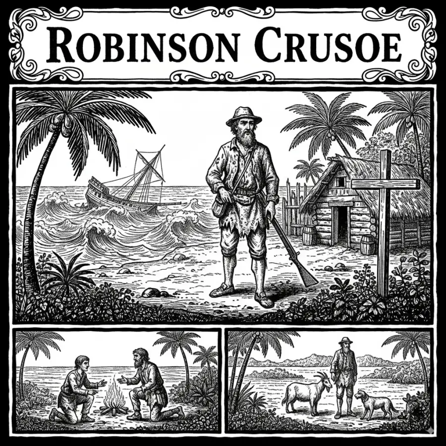
— 在羊皮紙般的頁面上，展開你的漂流 —
取材自經典原著，從船難漂流到重返文明，十個章節、數十個抉擇，親手寫下屬於你的生還故事。
拾取漂流物資、收集島上素材，合成工具與求生裝備。每一件物品，都可能是活下去的關鍵。
風暴、野獸、不速之客——每一次航程都不一樣。相同的選擇，可能迎來截然不同的命運。
通關後獲得 S 到 F 的航海評分與復盤評語，翻閱航海紀錄，挑戰更完美的生還之路。
— 十個章節，十段旅程 —
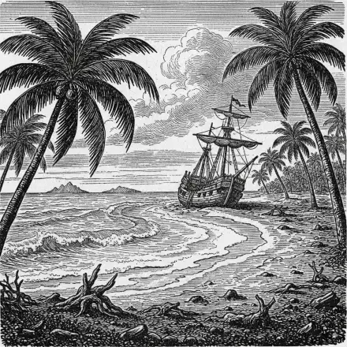
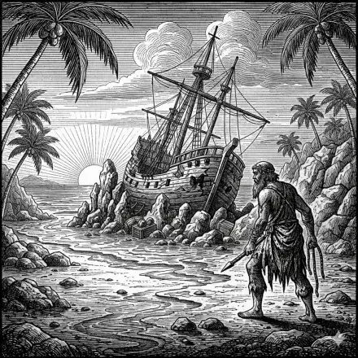
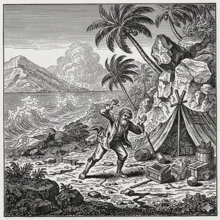
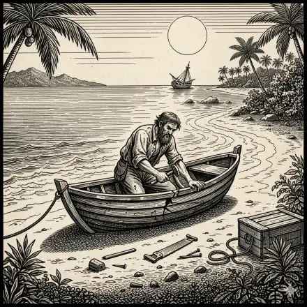
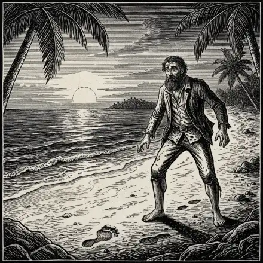
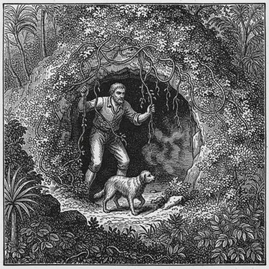
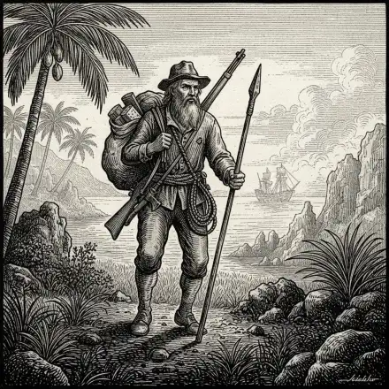
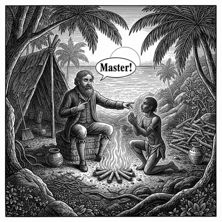
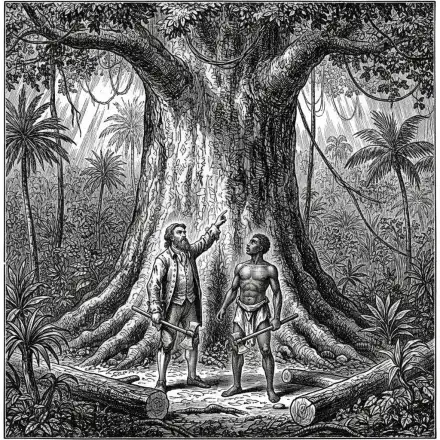
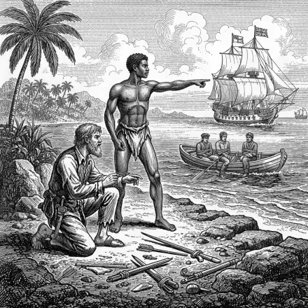
— 閱讀、抉擇、承擔後果 —
海浪把你拋上陌生的沙灘。遠處的船骸在礁石間若隱若現，暴風雨前的烏雲正在聚攏。你渾身濕透，但還活著。
— 用你的語言，讀你的冒險 —
免費下載，開始你的漂流日誌。